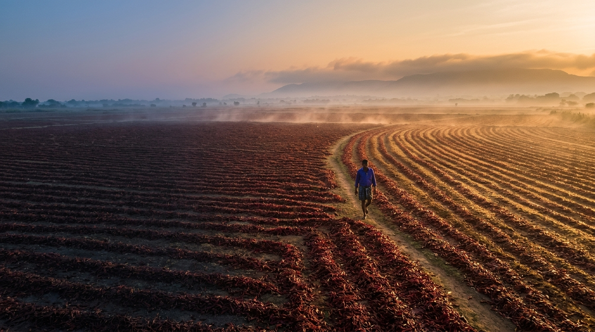
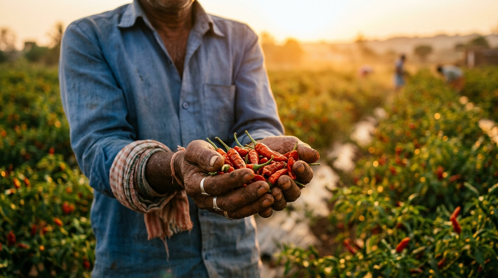
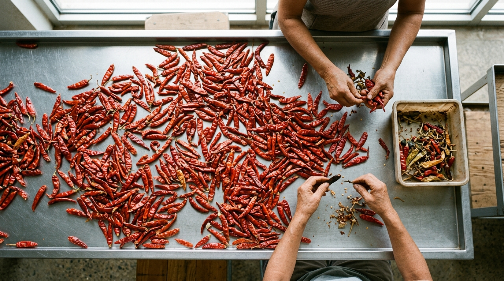
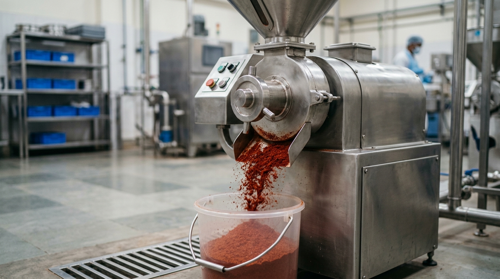
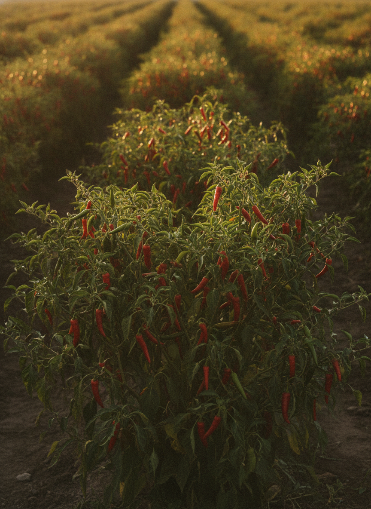

The real flavours of India, sealed at the source.
We export single-origin red chilli, coriander and turmeric — cold-press milled at low RPM so the aroma survives the journey, batch-tested before every shipment, and traceable to the farm.
Specimen lot · ships with every order
Cold-press, low-RPM milling
Friction-free grinding keeps the volatile oils — and the aroma — intact in every powder.
Zero adulteration
No added colours, no starch, no preservatives, no chemicals. Spice, and only spice.
Batch lab-tested
Every lot is screened for pungency, colour, pesticide, microbiology and aflatoxin before dispatch.
Fully traceable
Each pack carries a lot code linking back to the farm-belt, the season and its lab report.
We don't sell "Indian spices." We sell one crop, from one belt, picked at one season.
Single-origin means traceable flavour you can specify and repeat — never a blended-down commodity.

Red Chilli
Heat and colour, measured. We match SHU and ASTA to your formulation — Teja for fire, Sannam for balance, Byadgi for deep colour.

Coriander
The aromatic seed of the desert. Cool nights and dry days concentrate the essential oils into a bold, bright, sweet-citrus seed.

Turmeric
India's golden standard, measured in curcumin. Hard, bright fingers from two of the country's most prized turmeric belts.
The Ace7 Standard — seven marks every lot must earn.
The "7" isn't decoration. It's the seven-point protocol a batch passes through before it carries our name — from the farm gate to the sealed export bag.
Single-origin sourcing
One crop, one farm-belt, one season. We never blend regions or seasons down to hit a price — origin is the whole point.
Hand-sorting & grading
Every lot is sorted for colour, size and defects before it goes near a mill. The best form in, the best result out.
Cold-press, low-RPM milling
Low-speed grinding generates almost no heat, so the volatile oils that carry aroma and pungency stay locked in the powder.
Zero adulteration
No colour additives, no starch fillers, no preservatives, no anti-caking chemistry. What's on the spec sheet is what's in the bag.
Batch lab-testing
Pungency, colour, curcumin, moisture, pesticide residue, microbiology and aflatoxin — tested lot by lot, before anything ships.
End-to-end traceability
A lot code on every pack ties the product back to its farm-belt, harvest season and its own lab report. Open a recall in seconds, not weeks.
Climate-aware packaging
Food-grade, moisture-barrier packing in export formats — so the spice that leaves our floor is the spice that reaches your kitchen.
Source. Sort. Process.
A short, deliberately simple supply chain — because every hand a spice passes through is a chance for it to lose flavour or pick up something it shouldn't.

SourceStraight from the farm-belt
We buy from the growing regions each crop is famous for — Guntur, Rajasthan's Hadoti, Sangli and Salem — close to the farmers who raise them.

SortGraded to the best form
Lots are cleaned, colour- and size-sorted, and defect-checked by hand and machine — so only the best material moves forward.

ProcessCold-pressed & lab-released
Cold-press milled to your spec, then lab-tested and lot-coded before it's packed in export-ready, moisture-barrier formats.

Know exactly when each crop is at its best.
Spices are seasonal. Our interactive harvest calendar maps the sowing, growth, harvest and processing windows for all three crops — so you can plan contracts around peak-freshness lots instead of guessing.
- Red chilli — red-ripe harvest Dec–Mar, peaking Feb–Mar at the Guntur yard.
- Coriander — a rabi crop, harvested Feb–Mar across Rajasthan.
- Turmeric — an 8–9 month crop, dug and cured Jan–Mar.
Built for buyers who answer to a spec sheet.
From hotel and restaurant kitchens to import houses and food manufacturers — across four markets that demand consistency, documentation and food safety.
Hotels, restaurants & catering
Consistent heat, colour and aroma that chefs can build a menu on, batch after batch.
Gulf import & distribution
Export documentation, Halal-friendly handling and the deep colour the Gulf market prefers.
European food industry
Pesticide, aflatoxin and microbiology screening aligned to strict European thresholds.
Indian manufacturers & HORECA
Reliable domestic supply of single-origin, single-spice lots in bulk formats.
Need a recipe blend, a specific SHU, or your own private label? We build to your formulation
"Real flavour isn't a tagline. It's a spec sheet you can verify."
— The Ace7 promise
Tell us your spec. We'll send samples and a quote.
Share the crop, the grade, the SHU or curcumin you need and your destination market — we'll match a single-origin lot and get documented samples moving.